Anhang:
Beispiele für Betriebsanweisungen für den Umgang mit Gabelstaplern
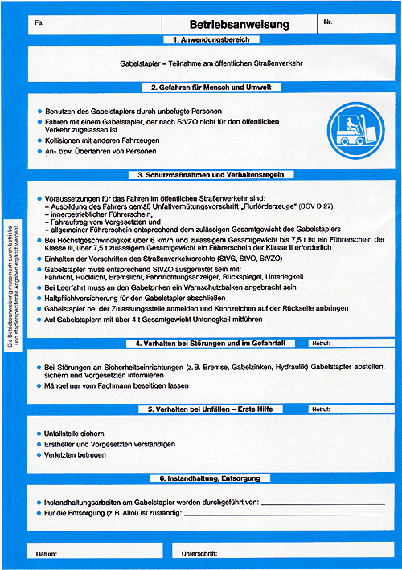
Beispiel einer Betriebsanweisung: Teilnahme am öffentlichen Straßenverkehr
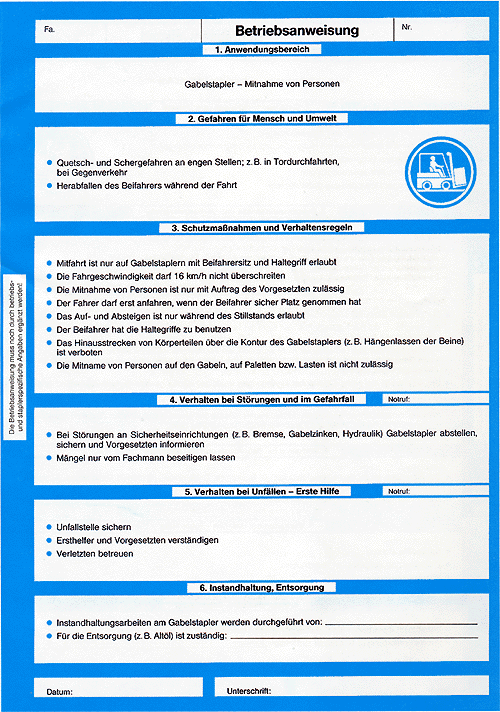
Beispiel einer Betriebsanweisung: Mitnahme von Personen
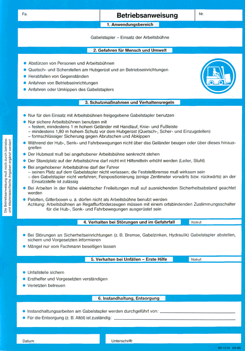
Beispiel einer Betriebsanweisung: Einsatz der Arbeitsbühne
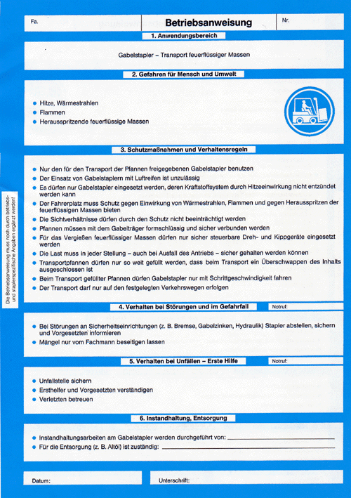
Beispiel einer Betriebsanweisung: Transport feuerflüssiger Massen
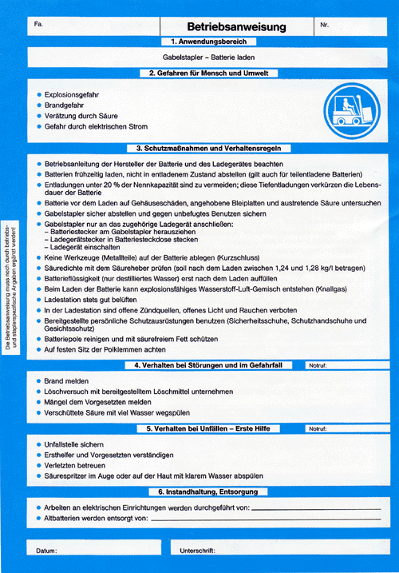
Beispiel einer Betriebsanweisung: Batterie laden
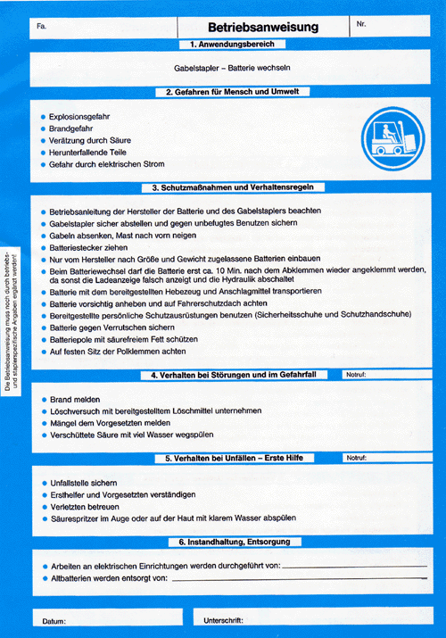
Beispiel einer Betriebsanweisung: Batterie wechseln
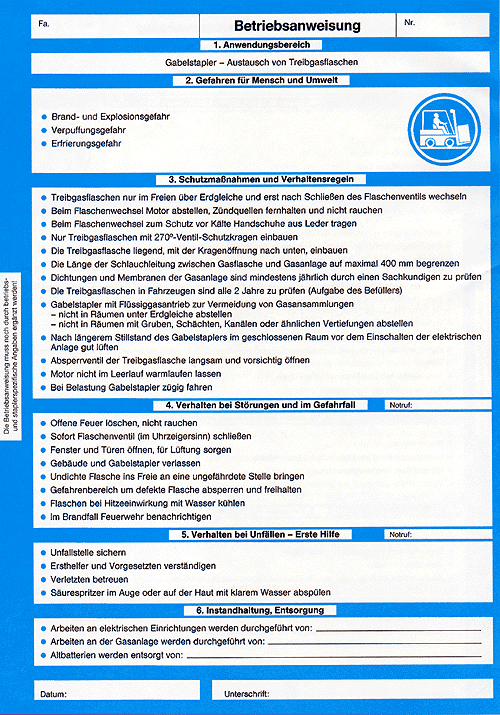
Beispiel einer Betriebsanweisung: Austausch von Treibgasflaschen
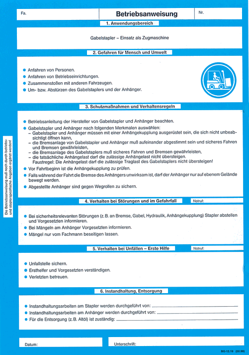
Beispiel einer Betriebsanweisung: Einsatz als Zugmaschine
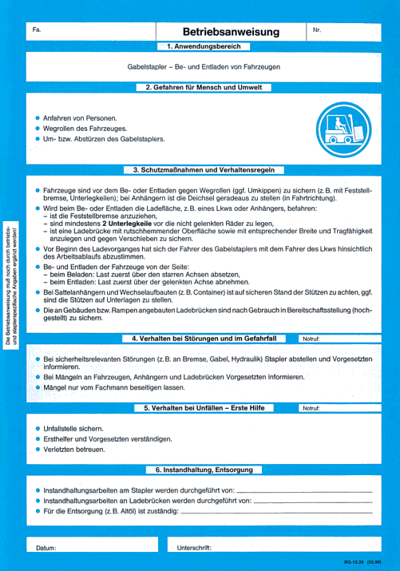
Beispiel einer Betriebsanweisung: Be- und Entladen von Fahrzeugen
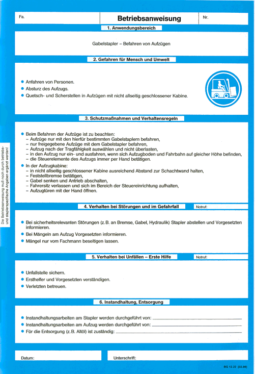
Beispiel einer Betriebsanweisung: Befahren von Aufzügen
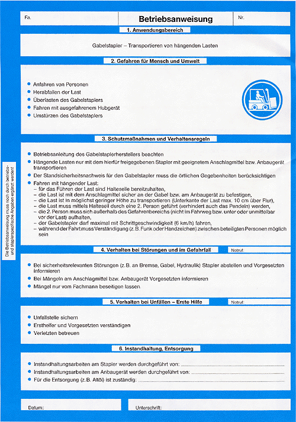
Beispiel einer Betriebsanweisung: Transportieren von hängenden Lasten